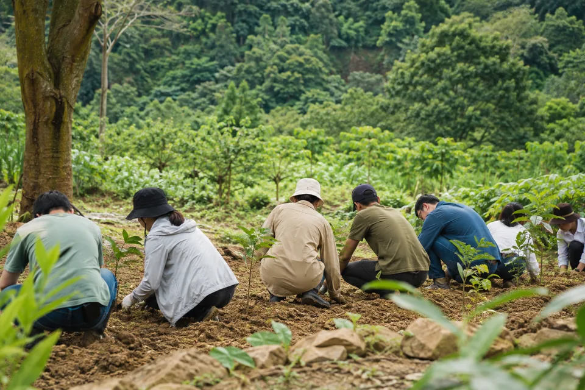
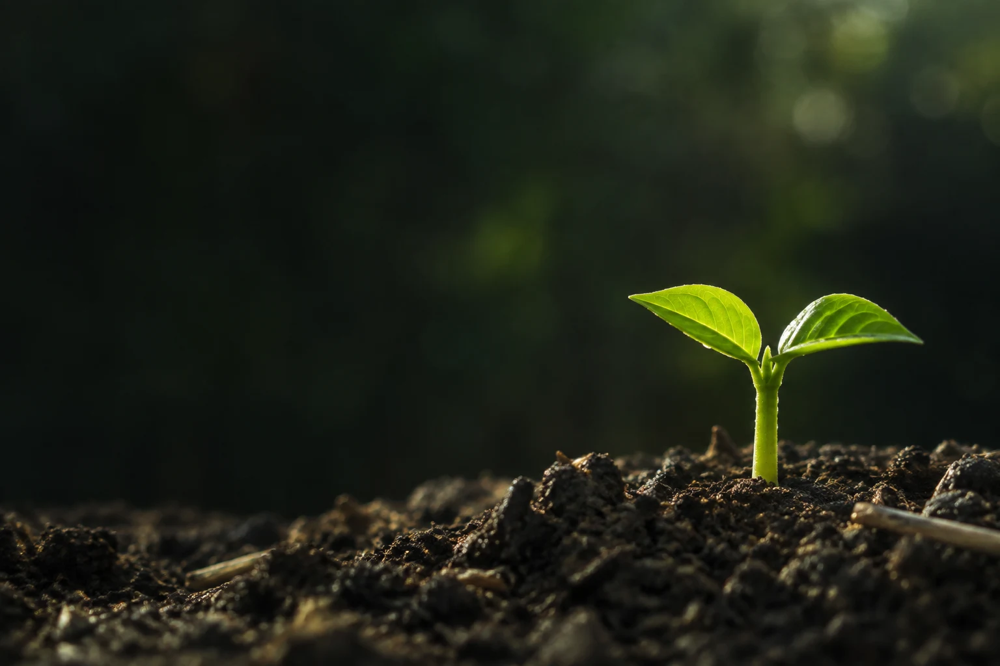
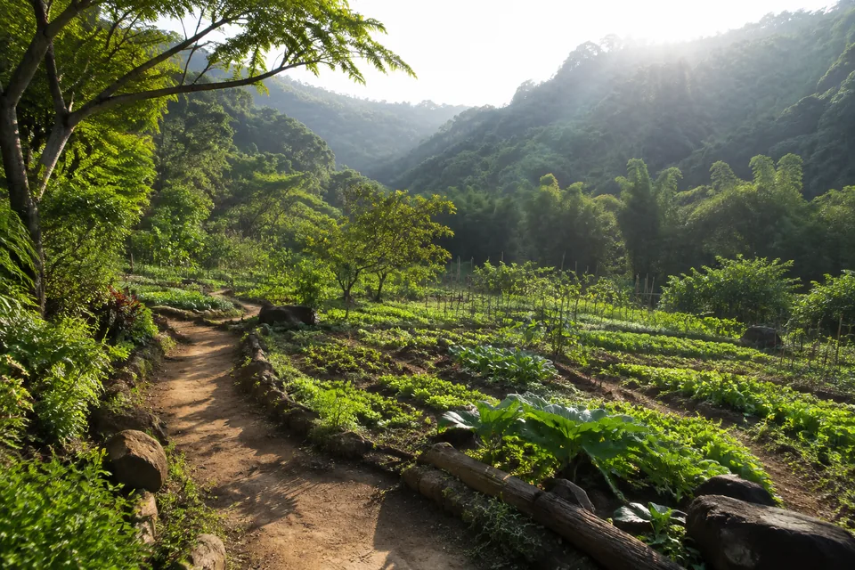
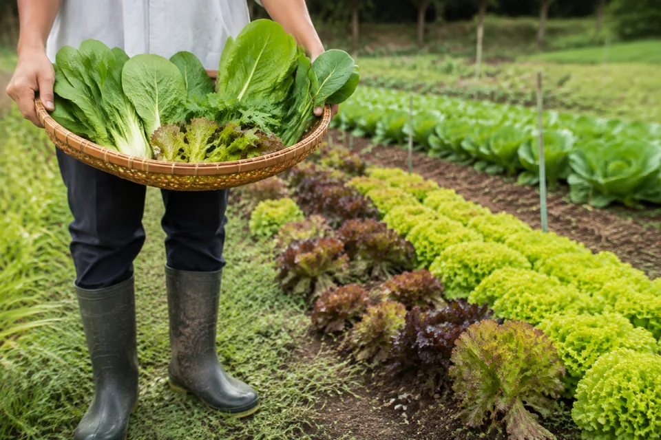
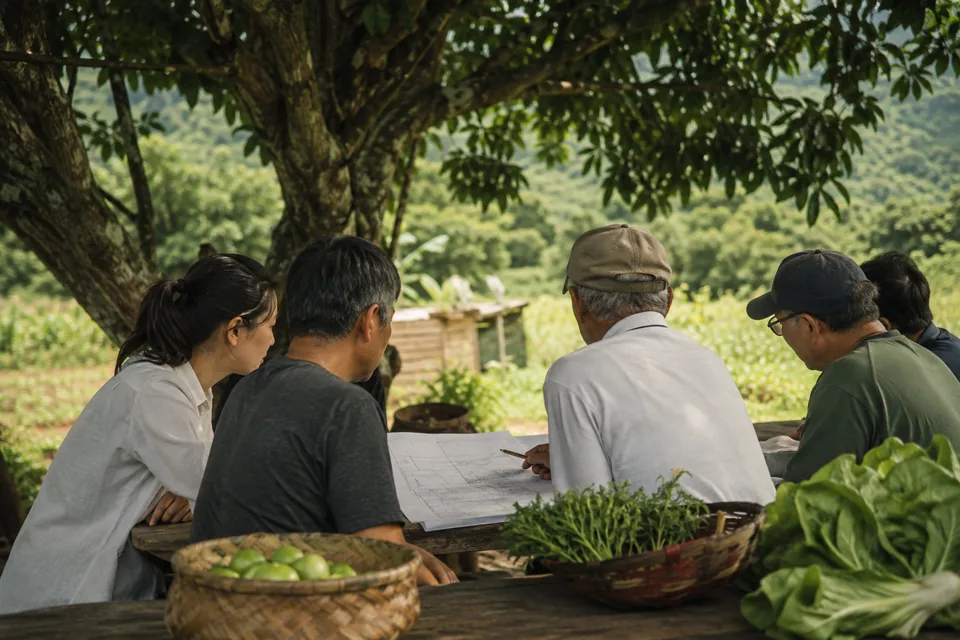
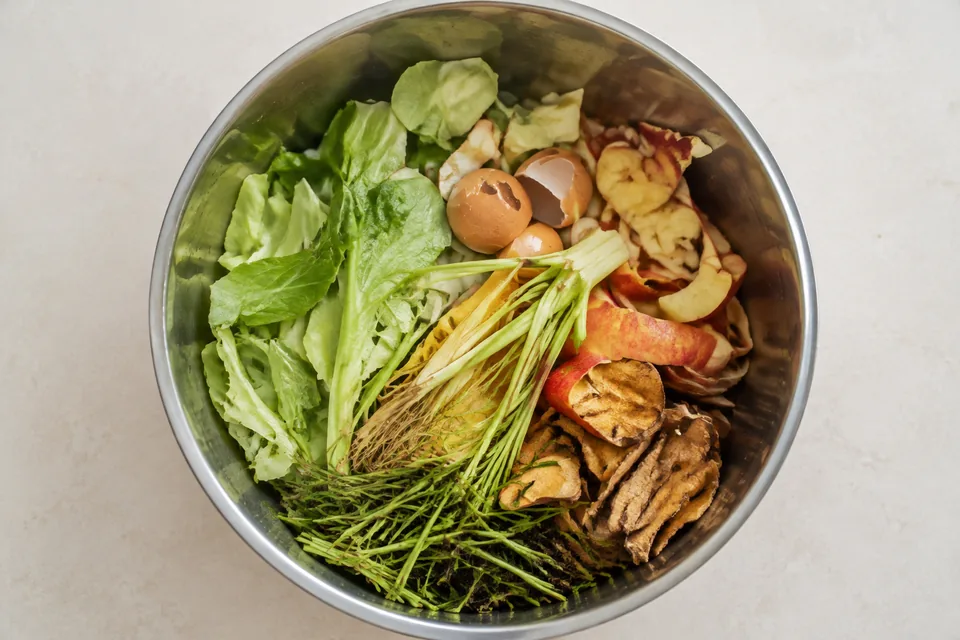
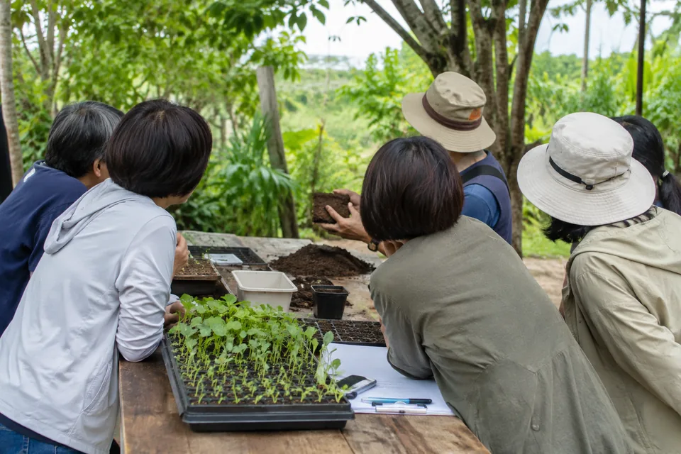

01
企業與組織
讓永續，與在地發生關係。
從農產品採購、員工參與到場域教育，探索與企業目標相連的合作方式。


圖像呈現再沃的發展願景，均為 AI 生成情境，非實際場域或活動紀錄。
01 / 關於再沃
一把堆肥，可以是新生的開始。
一座農莊，也可以讓耕作、學習與照顧相遇。
台灣再沃以桃園大溪為起點，整合菓嶺農莊、大溪小慈心與相關工作，連結資源循環、農業經營、永續教育及農福連攜。
我們希望讓這些工作彼此支持，把對土地的想像，慢慢做成能持續的日常。


02 / 五大業務
從土壤到生活，從生產到照顧。
五項事業正逐步整合與規劃，
共同走向人與自然共好的未來。
03 / 循環之道
我們正在規劃的循環路徑，
把資源、生產與生活重新連起來。
剩餘，
也能成為
下一次豐盛。

連結餐飲、農業與在地料源，從源頭分類開始。
重新看待資源規劃合適的處理、熟成與品質管理，形成可利用的資材。
讓養分再生把養分帶回農業生產，連結土地照顧與農產品。
滋養土地透過農產品、教育與參與，讓更多人理解循環。
一起創造價值農業殘體再回到循環的起點，讓一次次生產，都有機會延續養分。
以上為發展構想；收運、處理、場地與產品使用，將依合作條件及適用規範逐步落實。
04 / 一起參與
從一個共同關心的議題開始，
找到適合彼此的參與方式。

從農產品採購、員工參與到場域教育，探索與企業目標相連的合作方式。

以食農、資源循環與樸門設計為主題，規劃能觀察、提問與動手實作的學習。
連結農業、循環技術、照護與就業支持，尋找有清楚分工、能持續的合作。
聯絡方式與參與資訊，將於準備完成後在此公布。